Урок 1/15
Могущество вопросов
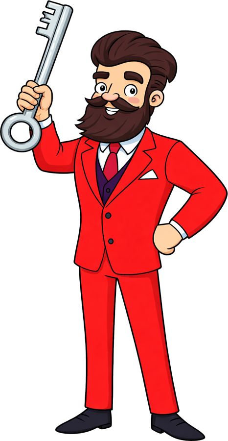
«Нельзя отвечать вопросом на вопрос!» – говорили нам в детстве взрослые, и мы до сих пор повторяем это правило, не задаваясь вопросом «а почему так?».
Подумайте, для чего это правило вводилось?
Правильно! Чтобы лучше нами управлять.
- Взрослые задают вопросы.
- Мы отвечаем.
- Они управляют ситуацией, пользуясь полученной информацией.
Прошли годы, и это вбитое в голову правило постоянно играет против нас.
Как мы говорим?
Все говорят о важности вопросов для продаж, переговоров да и просто общения. Но как только доходит дело до практики… Большинство людей переходит на монологи:
— Я считаю, что правильно так.
— А я так.
— Нет, ты не прав, нужно так.
К чему это приводит? Стороны не слышат друг друга, каждый сконцентрирован на себе. Донести свою мысль до человека принудительно просто невозможно — коммуникация отсутствует.
Вопросы – это перехват управления ситуацией.
Если вы умеете задавать вопросы и делаете это корректно, то вы можете любой разговор привести туда, куда вам нужно.
Вопросы – главный инструмент любого переговорщика, настолько необходимый для успешного общения, что я создала переговорную игру «Гений вопросов», обучающую его использованию для достижения своих целей.
Кроме нас, этой теме практически никто не обучает.
Ситуация · Куда вы залетели?
Эксперт по переговорам рассказывает у себя в канале о том, что новый тренд обучения – это nanolearning, когда видеоурок длится 1-3 минуты.
Известный маркетолог написал в комментариях:
— А вы бы хотели лететь в самолете, который спроектировал инженер, обученный по трехминутному ролику?
Подумайте, как можно ответить маркетологу с помощью встречного вопроса?
Урок 2/15
принцип 1
Вопросы о значимости
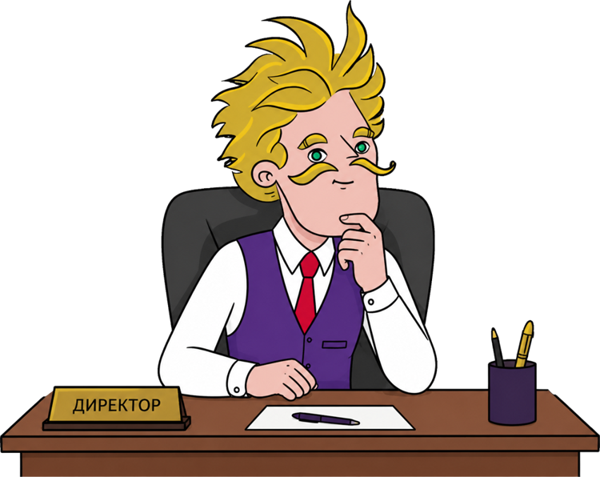
В переговорах перед тем, как куда-то двинуться, сначала нужно понять: а вам это действительно нужно?
Часто так бывает, что мы тратим огромное количество времени и эмоций на решение вопроса, который:
- К нам не относится;
- Нам не нужен и/или неинтересен;
- Которого вообще не существует.
Только потому, что кто-то бросил нам вызов.
Главная польза вопросов о значимости
Главная польза вопросов о значимости в том, что вы не совершаете лишних действий.
Переговоры имеют для вас значимость? Вы в них вступаете. Нет — занимаетесь другими более важными делами.
Разберем на примере кейса.
Эксперт по переговорам рассказывает у себя в канале о том, что новый тренд обучения — это nanolearning, когда видеоурок длится 1-3 минуты.
Известный маркетолог в комментариях:
— А вы бы хотели лететь в самолете, который спроектировал инженер, обученный по трехминутному ролику?
Проверим данную тему на значимость.
1
Относится ли к вам каким-то образом тема обучения инженеров самолетостроению?
2
Интересно ли вам, как лучше построить обучение для инженеров?
3
А вообще, существует ли такая проблема: учить или нет инженеров самолетостроению с помощью коротких видео?
Предварительный вывод, который мы можем сделать: тема не значима.
Чтобы убедиться в этом и больше понять нашего собеседника (ведь он мог хотеть донести нам что-то важное, но неудачно подобрал пример), мы используем вопрос о значимости.
Вопрос корректно демонстрирует нашу позицию: если тема имеет ко мне отношение и значима для меня, то я готов обсуждать, если нет, то — нет.
Шаблоны вопросов о значимости, которые мы можем адаптировать под нашу ситуацию, звучат так:
— В чем значимость?
— Для чего нам это делать?
— Насколько большое значение это для нас имеет?
В рассматриваемом кейсе вопрос может принять такую форму:
— А вы бы хотели лететь в самолете, который спроектировал инженер, обученный по трехминутному ролику?
— Я обучаю переговорам, среди людей, которые читают этот пост, нет тех, кто обучает инженеров самолетостроению. Для чего нам обсуждать чужую специфику?
Вопрос, который мы задаем, должен быть нейтральным: мы одинаково готовы с интересом услышать и разобрать любой ответ собеседника, а не считаем, что ответ только один и наш собеседник должен это уяснить.
−Некорректный вариант вопроса:
— Ну и какое отношение к теме переговоров имеет обучение самолетостроительству?
Если собеседник не готов подтвердить значимость для обсуждения заявленной им темы, мы возвращаемся на свое поле, не тратим ресурсы и укрепляем переговорную позицию.
Если собеседник настаивает на значимости, то ему нужно ее обосновать. Вы меняетесь ролями, роль доказывающего свою правоту переходит к собеседнику, вы получаете ролевое преимущество.
Адаптируйте вопрос о значимости под себя. В какой формулировке в этой ситуации вы бы его задали?
Ситуация · Испорченный банк
Представьте: вы работаете в банке. Проценты по вкладам сначала взлетели до небес, а потом резко снизились. Клиент, заехавший переоформить закончившийся договор, шокирован. Был 21% годовых, стало 15%. Возмущенный такой несправедливостью клиент заявляет:
— Совсем вы испортились!
Ответьте клиенту с помощью встречного вопроса.
Урок 3/15
принцип 2
Вопросы, расширяющие картину мира
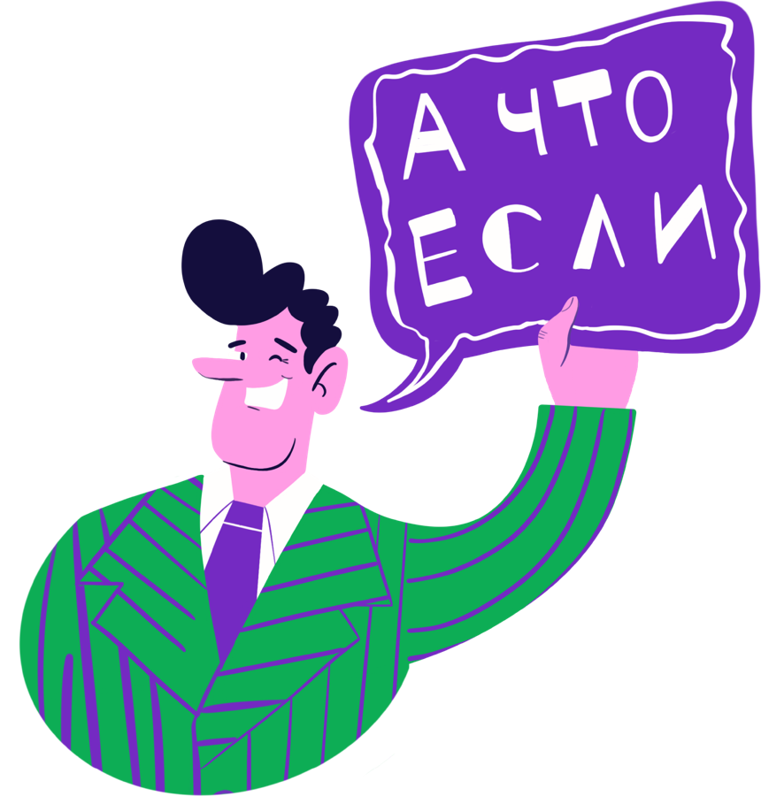
Часто так бывает, что в переговорах мы сталкиваемся с непониманием ситуации нашим собеседником. От того, что он что-то не понимает, он может не соглашаться на выгодные условия, спорить с нами или даже вести себя агрессивно, заподозрив обман.
И тут мы делаем самую страшную ошибку.
Мы начинаем ему объяснять.
В нашем представлении все просто — сейчас мы объясним человеку, что к чему, он все поймет, и все будут счастливы.
Но чем больше мы объясняем, тем только хуже становится ситуация.
Давайте разберемся, почему.
Посмотрите на ситуацию со стороны собеседника. Он о чем-то вам уверенно заявил. Вы ему объяснили, как дело обстоит на самом деле. Теперь ему нужно признать, что он ошибался, а вы — молодец, знаете все лучше него да еще и объясняете чудесно!
Захотелось вам оказаться на месте признающего свою ошибку? Ага, как же!
Вот почему люди смертельной хваткой будут держаться за свою позицию и пропускать мимо ушей все ваши объяснения.
Другое дело — вопрос.
Когда вы вместо того, чтобы объяснять собеседнику, почему он не прав, задаете ему вопрос, то как бы приглашаете его вместе разобраться в ситуации. Вы не настаиваете на том, что знаете, как правильно.
Никто не знает, как.
Вы пообщались, собеседник дал вам ответы на вопросы, ситуация прояснилась, всплыли новые факты. Картина мира собеседника расширилась. Теперь он может поменять свою точку зрения вполне комфортно.
Когда он озвучивал ее раньше, была одна ситуация, а теперь — другая.
И это не вы ему свое «правильное» мнение навязали, а он сам к нему пришел.
Шаблоны вопросов, расширяющих картину мира, звучат так:
— А вы знаете о ___?
— Да, только как быть с ___?
— Это с учетом того, что ___?
В рассматриваемом кейсе вопрос может принять такую форму:
— Совсем вы испортились!
— Испортились? Вы знаете, на сколько сейчас снизились процентные ставки по вкладам на рынке?
+Более смелый вариант
Или смелый вариант для тех, у кого хорошо с самоиронией, в сложных ситуациях она очень помогает:
— Да, испортились😃 А вы знаете, насколько сильно испортился весь рынок?
Наша задача не просто погасить конфликт с клиентом, но и совершить переворот в его представлении о мире — корректно донести информацию о всеобщем снижении ставок. Если этого не сделать, он может уйти в другой банк, даже если по факту там окажется такой же процент.
Задавая вопрос, мы втягиваем клиента в диалог, в котором шансы на то, что он нас услышит и поймет, гораздо выше, чем если мы просто озвучим ему новость.
Ситуация обостряется тем, что клиент высказал нам негатив, после которого он готов защищаться, поэтому любая информация воспринимается как нападение, которое нужно отбить.
Вопрос демонстрирует, что мы не будем нападать в ответ. Разговор переходит в конструктивное русло.
Задание Адаптируйте вопрос, расширяющий картину мира, под себя. В какой формулировке в этой ситуации вы бы его задали?
Ситуация · Татуировки есть? А если найду?
Молодой человек проходит собеседование в крупной компании на должность HR-специалиста. После обсуждения ряда профессиональных вопросов рекрутер уточняет:
— А есть ли у вас татуировки?
Подумайте, как бы вы ответили на месте молодого человека рекрутеру? Используйте встречный вопрос.
Урок 4/15
принцип 3
Вопросы, демонстрирующие удивление
Бывали ли вы в ситуации, когда вы обескуражены поведением собеседника, не понимаете, что он делает, и не знаете, как реагировать?
Главное в такой ситуации — не наделать ошибок. Нужно сначала понять, что происходит, какая стратегия поведения вам выгодна, и только потом реагировать.
Но что делать, если собеседник задал вам вопрос и ждет ответа?
Как в ситуации на собеседовании:
— А есть ли у вас татуировки?
Что важно понять перед тем, как начать реагировать на этот вопрос?
Первое – очень четко определиться, какова ваша цель в переговорах.
Например, вы хотите устроиться на работу в эту компанию, а для этого — произвести позитивное впечатление на рекрутера.
Но вопрос о татуировках настораживает.
А может, это компания, которая диктует правила и вмешивается в личную жизнь сотрудников? Определяет, какой образ жизни вести, в какого бога верить и чем заниматься после работы? Вряд ли вам захочется в такой компании работать.
Однако все это — только наши предположения из-за странного вопроса рекрутера.
- А что если все не так, как кажется?
- Что, если компания — отличная, а рекрутер задал вопрос «от себя»?
- Или у них был прецедент с «лагерными» татуировками, и они теперь перестраховываются?
- Или этот вопрос задан для того, чтобы посмотреть, как вы реагируете на странные вопросы? Ведь вам клиенты будут их потом задавать.
- Или что-то еще, о чем вы даже не догадываетесь?
Представляете, вы в порыве негодования прочитаете лекцию о неуместности вопроса, а потом узнаете о позитивном намерении рекрутера?
Не будем торопиться с реакцией, в этой ситуации отлично может сработать вопрос-удивление.
Шаблоны вопросов, демонстрирующих удивление, звучат так:
— Как вы сказали?
— Ого! Впервые сталкиваюсь с таким вопросом, а для чего он?
Или просто повторить фразу собеседника с удивлением и вопросительной интонацией.
В рассматриваемом кейсе вопрос может принять такую форму:
— А есть ли у вас татуировки?
— Татуировки? (и держим паузу).
Задача вопроса-удивления — получить реакцию оппонента и дополнительную информацию.
Если мы удивляемся — это значит, что такой вопрос нам никогда не задавали и он для нас странен.
После такого вопроса собеседнику становится не по себе (особенно, если вы держите паузу и ничего не добавляете) и он, с большой вероятностью, что-то добавит: либо уточнение (видимые татуировки, например), либо цель, с какой он задает вопрос.
Если повторение фразы с вопросительной интонацией не сработает, то можно обозначить свою позицию:
— Извините, но мне никогда не задавали подобного вопроса на интервью и я не понимаю его цели. Поясните, пожалуйста.
Адаптируйте вопрос, демонстрирующий удивление, под себя. В какой формулировке в этом кейсе вы бы его задали?
Ситуация · Что вы хотели?!
Ваш коллега Алексей приглашает вас сходить с ним на встречу в интересную компанию. Ей нужны услуги, связанные с текстом, а это как раз ваш профиль, вы — директор компании.
Вы встречаетесь в красивом офисе. Вместе с вами на встрече еще один человек — знакомая Алексея, Ольга. Это она организовала встречу, но она тут пока не главный человек.
Главный участник встречи приходит с опозданием минут на двадцать. Это пиар-директор компании, энергичная молодая женщина. От нее пахнет свежевыкуренной сигаретой, губы и лоб характерно сжаты, как это часто бывает у стрессующих курильщиков. Видно, что она спешит.
— Так, Оля, о чем эта встреча?
— Вот, Алексей и Максим занимаются коммуникациями, они могут нам помочь со стратегией на…
— Погодите… У нас до конца года уже всё разбюджетировано, подрядчики работают. Что вы мне хотите предложить?
— Ну вот мы говорили, что нужна стратегия…
— Оля, я ясно выразилась: бюджет распределен, подрядчики работают. Зачем вы организовали эту встречу?
Подумайте, как бы вы вмешались на этом этапе в разговор и разрулили ситуацию с помощью вопроса?
Эта ситуация случилась с Максимом Ильяховым в реальной жизни, он описал ее, как провал в своей книге «Ясно, понятно».
Урок 5/15
принцип 4
Вопросы, делающие шаг назад и захват
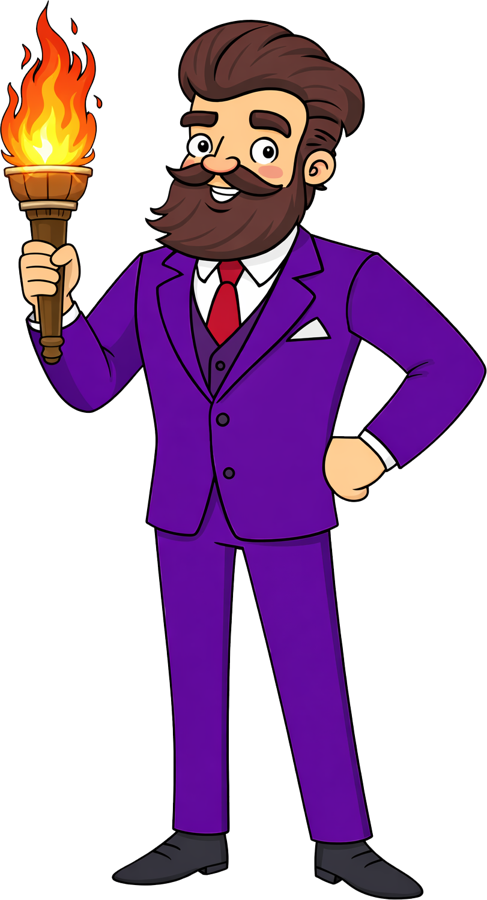
Очень сложно управлять диалогом, когда собеседник агрессивно настроен против вас. Чем больше вы будете настаивать на своей точке зрения, тем сильнее будет противостояние.
А что если, наоборот, ослабить хватку и сделать шаг назад? Поднять руки, показать, что вы без оружия и не настроены сражаться.
Задача — выйти из состояния войны и ожесточенного отстаивания своей позиции.
Сделанный шаг назад добавляет нам устойчивости и силы для последующего рывка вперед.
Проанализируем кейс и на его примере разберемся, как это сделать.
Что происходит?
Пиар-директор заняла агрессивную боевую позицию, она нападает на сотрудницу и готова отбить любой довод о пользе встречи.
Воевать с человеком, с которым ты хочешь заключить соглашение о сотрудничестве, не имеет никакого смысла.
Поэтому приоритет №1 в этой ситуации — установить контакт, остановить конфликт.
И только потом можно зайти с другой стороны.
1 вариант Взять на себя вину за сложившуюся ситуацию:
— О, это наша ошибка, мы договорились о встрече, не узнав, есть ли у вас уже подрядчики. Теперь понятно, что этот вопрос у вас уже решен.
2 вариант Признать поражение:
— Если бюджет распределен и подрядчики работают, то ни о каких контрактах речи идти не может, вы правы.
После шага назад делаем заход с другой стороны, чтобы возобновить диалог уже в других тонах.
Захват
Дальше для захвата нам потребуется вопрос, на который другая сторона может сказать нам «нет» или согласиться и продолжить диалог.
Если мы не настаиваем, а сразу даем возможность отказаться, то такое предложение не будет воспринято «в штыки».
Пример:
— О, это наша ошибка, мы договорились о встрече, не узнав есть ли у вас уже подрядчики. Теперь понятно, что этот вопрос стратегии у вас уже решен. Скажите, раз уж мы здесь оказались, есть ли темы в области коммуникаций: тексты, реклама, ведение соцсетей или поддержка клиентов, где вам были бы интересны новые подходы? Если нет таких тем, то так и скажите, мы на этом закончим.
Захват с передачей инициативы
Возможен вариант захвата, когда мы передаем инициативу собеседнику. Раз ему так нравится управлять ситуацией, пусть скажет, что делать дальше.
Пример:
— Если бюджет распределен и подрядчики работают, то ни о каких контрактах речи идти не может, вы правы. Тогда как поступим: закончим на этом встречу или обсудим тему, по которой вы еще не законтрактованы, например, ведение соцсетей?
Вопросы, делающие шаг назад и захват
Итак, шаблоны вопросов, делающих шаг назад и захват, звучат так:
— Да, это моя ошибка. А что, если..?
— Вы правы. Тогда что нам делать?
Адаптируйте вопрос, делающий шаг назад и захват под себя. В какой формулировке в этом кейсе вы бы его задали?
Ситуация · Выгодное предложение
Мастер по маникюру привлекает клиентов через соцсети. Работает давно, поток клиентов стабильный, цены фиксированные. В ответ на запрос цены, она отправляет потенциальной клиентке стоимость услуг — 3 500 рублей за комплексный маникюр. И получает такой ответ:
— Ольга, добрый вечер! 3 500 — дорого. Если бы за 2 500, я бы еще и сестренку с собой взяла. И маму.
Подумайте, как мастер может ответить потенциальной клиентке с помощью вопроса, если снижать стоимость услуг она не планирует?
Урок 6/15
принцип 5
Вопрос=платформа
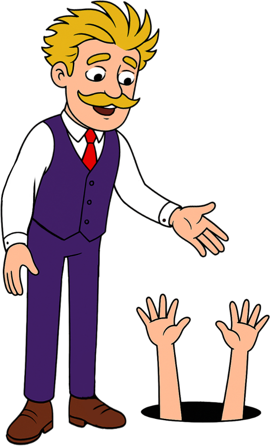
Часто в переговорах нам нужно донести какую-то информацию до собеседника, изменить его картину мира за счет новых данных.
В таких ситуациях есть риск «синдрома учительницы», когда мы как будто поучаем неразумного ученика:
— Смотри, Маша, вот это — белое, а вот это — черное. Не перепутай!
Воспринимается такая учительская позиция очень негативно, люди не хотят, чтобы их поучали без запроса.
И тут на помощь приходят вопросы-платформы.
Схема вопроса-платформы
Утверждение, которое важно, чтобы собеседник принял, как факт + вопрос, отвечая на который, собеседник соглашается с предшествующим утверждением.
Как работает вопрос-платформа:
Отвечающий слышит в первую очередь вопрос и отвечает на него, не споря с утверждением.
Пример
В ответ на сведения о том, что не получается в срок доставить раздатку на мероприятие, ваш партнер говорит вам:
— Мы оба понимаем, что перенести мероприятие невозможно, есть какие-то предложения по выходу из ситуации?
Вопрос звучит как вызов, и на него хочется скорее дать ответ, чтобы не выглядеть бессильным человеком, который не может что-то предпринять в сложной ситуации. Отвечая на этот вопрос, мы принимаем утверждение о невозможности переноса мероприятия как данность.
Разберем использование вопроса-платформы на кейсе.
Узнав стоимость маникюра, девушка пишет мастеру:
— 3 500 — дорого. Если бы за 2 500, я бы еще и сестренку с собой взяла. И маму.
Этот кейс — реальный, вот как ответил мастер по маникюру:
— Здорово 😊 Вот если бы вы договорились с «Тойота-сервис» продать мне «Камри» по цене «Лады» 2 штуки: для меня и для моей сестры — я бы брови вам бесплатно сделала: и сестре, и маме, и бабушке, и дедушке … и если бы захотели, то и собачке!
Классный ответ, правда? В Comedy Club лучше бы не бы придумали, так остроумно и доходчиво!
Но! Только до того момента, пока мы смотрим на ситуацию со стороны. Если поставить себя на место клиентки, то ответ сразу становится ужасным и неприемлемым.
- Он дан с позиции высокомерной учительницы, поучающей глупого ученика.
- В нем автор — остроумный герой, а клиент — адресат язвительных насмешек.
- После такого юмористического шоу вероятность заказа стремится к нулю.
И это при том, что клиентка ничего плохого не сделала, она просто задала вопрос о возможности скидки в ситуации, когда она приведет новых клиентов. И она еще не отказалась покупать за 3 500.
«Дорого и хочу скидку» — еще не означает, что не куплю.
Как можно ответить по-другому:
— Ольга, добрый вечер! 3 500 — дорого. Если бы за 2 500, я бы еще и сестренку с собой взяла. И маму.
— Стоимость определяется материалами, которые я использую, они настолько хороши, что я уже не могу использовать что-то другое 😊 Я с удовольствием приму вас, чтобы вы могли попробовать, а потом определить, стоит ли рекомендовать маме и сестренке, если решите, запись за 2-3 дня, хорошо?
В первой части вопроса-платформы мы вводим информацию о дорогих материалах, которые безумно хороши и определяют стоимость. Создается интрига: «Что это за материалы такие? Может, и правда, они стоят того?»
Во второй части мы корректно показываем, что у нас нет проблемы с клиентами, и задаем простой вопрос, на который легко ответить «хорошо», тем самым сохраняем возможность заказа, если клиентка все-таки надумает.
Адаптируйте вопрос-платформу под себя. В какой формулировке в этой ситуации вы бы его задали?
Ситуация · Кому вы дали премию?!
Представьте, что вы премировали одну из сотрудниц компании — Марию, после чего от Ирины вам приходит личное сообщение:
— Можно поинтересоваться, почему мне не дали премию, а Маше дали, хотя она на час раньше всегда уходит с работы?
Подумайте, как ответить сотруднице с помощью вопроса? Если вам нужны дополнительные данные — за что получена премия и как распределяется премия в компании — вы можете придумать эти вводные самостоятельно.
Урок 7/15
принцип 6
Вопрос «Взгляд с балкона»
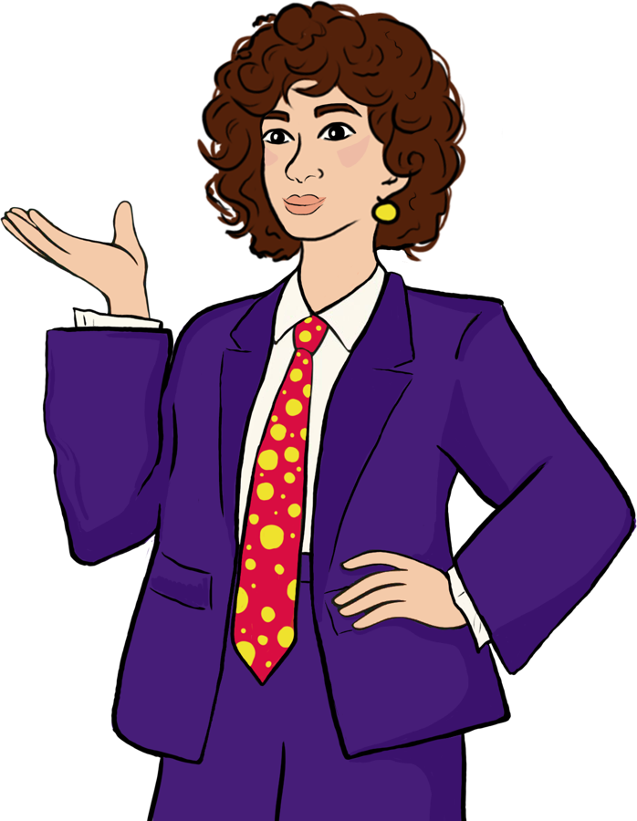
Когда переговоры уходят в эмоции – остановить и переубедить собеседника очень сложно. Данная техника позволяет взглянуть на то, что происходит со стороны, откинув эмоции и увидев продолжение такого разговора в будущем.
Вы смотрите на ситуацию с балкона и приглашаете собеседника увидеть эту же картину с другой позиции восприятия.
Делается это с помощью «отрезвляющего вопроса».
Пример
Сотрудник раздосадован, что пообещал жене с маленьким ребёнком быть дома вовремя, уже нужно идти, а он ещё не доделал важное задание. На вопрос руководителя о готовности работы заявляет:
— Если тебе так нужно – сделай сам!
Руководитель, оставаясь абсолютно спокойным:
— А ты понимаешь, что сейчас делаешь?
Шаблоны для создания вопросов «Взгляд с балкона»:
— А вы понимаете, что сейчас происходит?
— К чему это нас может привести?
— Для чего вы это говорите?
Разберем реплику из кейса и найдем подходящий вопрос для нее:
— Можно поинтересоваться, почему мне не дали премию, а Маше дали, хотя она на час раньше всегда уходит с работы?
Здесь в одной фразе слились две проблемы:
- Отсутствие понимания у сотрудницы механизма премирования (или нежелание его понимать)
- Некорректное указание сотрудницей на «ошибку» руководителя, предъявление претензии
Подумайте, какую из этих проблем нужно разрешить в первую очередь?
Отсутствие понимания у сотрудницы механизма премирования (или нежелание его понимать)
Это важный вопрос, но к нему мы можем перейти только после решения ситуации с претензией.
Если вопрос о премии может быть результатом недопонимания механизма премирования сотрудником, то критика руководителя и претензия о несправедливости – это выход из роли подчиненного и серьезный прецедент, который может стать в будущем нормой, если сейчас на него не отреагировать.
Некорректное указание сотрудницей на «ошибку» руководителя, предъявление претензии
Именно с претензией сотрудницы нужно поработать в первую очередь.
Если сотруднице прочитать лекцию о недопустимости предъявления претензий руководителю, критики его решений и попыток вмешательства в управленческий процесс, то никакого результата, кроме возросшего и теперь уже скрытого недовольства, мы не получим.
Если мы хотим изменить поведение человека, нужно, чтобы он сам ответил на вопрос, почему ему стоит поведение изменить.
Получится – переговоры могут дать результат, нет – поведение не изменится или перейдет в скрытое сопротивление.
— Ирина, скажи, как ты думаешь, вопрос, заданный в такой форме, может помочь тебе увеличить премию?
Усилят этот вопрос дополнительные вопросы:
— А что с ним не так? А как можно его сформулировать по-другому, чтобы получить ответ?
Задача руководителя
– продемонстрировать, что как только вопрос о премии будет задан в корректной форме, на него будет дан ответ.
Задача Ирины
– найти эту корректную форму и переформулировать вопрос (без подсказок руководителя!).
Пример диалога
— Ирина, скажи, как ты думаешь, вопрос, заданный в такой форме, может помочь тебе увеличить премию?
— Не знаю.
— А я знаю, что – нет. Есть желание его поменять, чтобы у нас случился конструктивный разговор?
— Да.
— Отлично. Как?
Ситуация · Токсичный директор
Директор небольшой компании, где все подчиняются напрямую ему, взял на работу молодую девушку. Сначала она поработала как стажер, потом как специалист. Училась, работала, были успехи и провалы, но в целом, как сотрудник вполне устраивала.
А потом Катерина увлеклась психологией.
Директор говорит про ошибки в работе, а она ему – про обесценивание. Вот так это происходит. Директор говорит: «Нормальный результат», а она возмущенно: «НОРМАЛЬНЫЙ?! А для меня – это ОТЛИЧНЫЙ результат, и я не позволю принижать его значимость!»
Директор в шоке, интересуется, почему такая реакция?
Катерина:
— То, что ты делаешь, это газлайтинг.
Газлайтинг – форма психологического насилия и социального паразитизма, главная задача которого – заставить человека мучиться и сомневаться в адекватности своего восприятия окружающей действительности через постоянные обесценивающие шутки, обвинения и запугивания.
Кейс реальный, его описала в своем блоге Марина Корсакова.
Подумайте, как можно ответить сотруднице с помощью вопроса?
Урок 8/15
принцип 7
Вопросы о последствиях
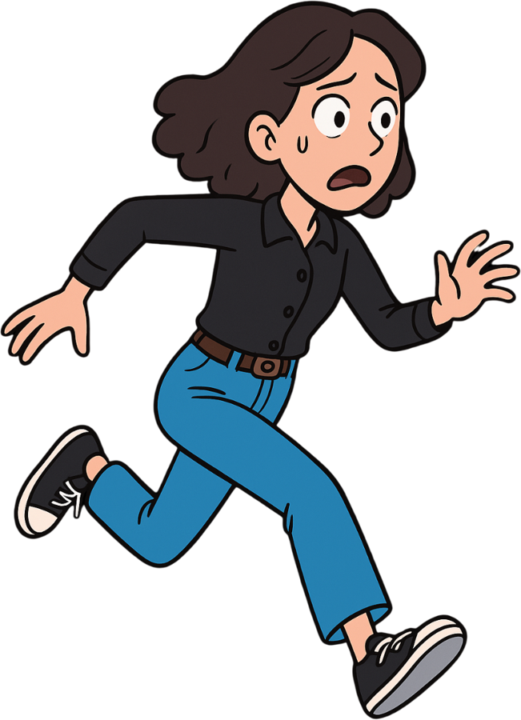
Сильные эмоции добавляют людям веры в то, что они делают все абсолютно верно! Нет другого пути и способа! Чем сильнее они заводятся и чем дальше заходят в пылу эмоций, тем сложнее их в чем-то убедить.
Что мы можем сделать в такой ситуации? Вывести разговор из «здесь и сейчас» в будущее и обсудить возможные последствия.
По форме вопросы о последствиях – это «взгляд с балкона», в котором мы не только поднимаемся над схваткой и видим ее со стороны, но и заглядываем в будущее и осознаем последствия.
Вот несколько шаблонов для создания вопросов о последствиях:
— Нужна ли нам эта конфронтация?
— К каким последствиям эта ситуация приведет?
— Если мы ничего не изменим, то чем все это закончится?
Разберем реплику сотрудницы из кейса и найдем подходящий вопрос для нее:
— То, что ты делаешь, это газлайтинг
Сотрудница обвиняет руководителя. Более того, она считает, что она вправе делать подобные заявления. На курсах по психологии ей сказали «можно», и она начала отстаивать свои границы на работе, не задумываясь о последствиях подобного поведения.
Чем закончится эта история, если Екатерина не изменит своего поведения и продолжит обвинять руководителя в газлайтинге? Увольнением. После увольнения придет осознание того, что, может быть, она делала что-то не так.
Но будет уже поздно, ситуацию не исправить.
А что если это осознание запустить сейчас?
Говорим о последствиях
— То, что ты делаешь, это газлайтинг.
— Газлайтинг – это психологическое насилие. Ты обвиняешь меня в насилии. Если мы сейчас эту ситуацию не разрешим, как ты думаешь, к каким последствиям она нас приведет?
Важно
1
Когда мы слышим обвинение, очень важно его повторить и зафиксировать. Чтобы другой человек:
- Понял, как воспринимаются его слова, как они звучат и какой смысл несут.
- Получил возможность либо взять свои слова назад и переформулировать свое утверждение, либо потерять возможность в будущем сказать: «Я говорил совершенно не то, просто меня неправильно поняли».
2
Обсуждение последствий нам нужно для того, чтобы получить возможность решить ситуацию здесь и сейчас, а не для того, чтобы угрожать собеседнику негативными последствиями.
Поэтому мы не озвучиваем сами, что будет, а предлагаем собеседнику ответить на этот вопрос.
Ситуация · Я расскажу вам все!
Блогер всегда активно общается с аудиторией, призывает задавать любые вопросы, а затем в постах, эфирах и сторис их разбирает.
И вот в личку приходит сообщение от подписчицы:
— Можно вам вопрос задать?
И сразу 15 аудио и фраза текстом: «Уверена, вам будет интересно».
Слушать все эти аудиосообщения желания и времени у блогера совершенно нет.
Подумайте, как блогер может ответить подписчице, с помощью встречного вопроса?
Урок 9/15
принцип №8
Вопросы о выгоде
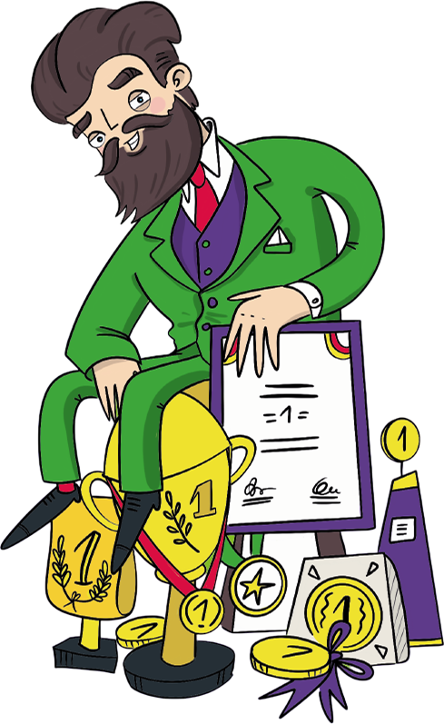
Кейс реальный, его описала в своем блоге Юлия Булгакова.
Блогер ответила:
— Сорри, слушать не могу, напечатайте текстом и сформулируйте вопрос – отвечу.
Дальше диалог разворачивался так:
— Мне так проще.
— Мне так сложно.
— А разве неважно интонацию мою послушать, чтоб вникнуть?
Диалог закончился конфликтом, возмущенным постом блогера и возмущенным комментарием подписчицы.
Анализ кейса
Представьте себя человеком, который записал 15 аудиосообщений, изложил свою душу, рассказал очень важную для него, тревожащую историю.
Это со стороны нам понятно, что невежливо загружать занятого человека своими проблемами и бесконечными аудиосообщениями. Читательница же из-за эффекта прожектора этого не понимает.
Эффекту прожектора подвержен каждый из нас. Все мы думаем, что мир вращается вокруг нас и все наши действия внимательно рассматриваются окружением, как будто мы живем, подсвеченные ярким лучом прожектора.
Поэтому, если в нашем ответе считывается:
- Сарказм по поводу 15 сообщений
- Намек на то, что это совершенно нам не интересно
- Намек на то, что проделанная читательницей работа – бессмысленна
То, 100% мы вызовем возмущение человека, с которым общаемся: скрытое или явное.
Выгода
Любые переговоры могут быть результативны, если мы преследуем цель получение выгоды и не забываем о выгоде собеседника.
Возможная выгода блогера:
- Получить интересный вопрос для разбора.
- Получить клиента на консультацию или курс.
- Написать пост-скандал тоже выгодно, но, как вы понимаете, есть в нем репутационные подводные камни.
Чтобы получить свою выгоду, нам нужно найти выгоду для собеседника и обозначить затраты по ее получению.
Вопрос-меню
Очень хороши вопросы-меню, когда мы озвучиваем несколько вариантов выгоды и собеседнику можно просто выбрать подходящий вариант.
Пример
— Можно вам вопрос задать? ____(15 аудиосообщений). Уверена, вам будет интересно.
— Ирина, скажите, чтобы вам хотелось: чтобы я вас выслушала и полностью разобрала вашу ситуацию на платной консультации или разобрала с подписчиками какой-то конкретный ваш вопрос, как я делаю в сторис?
Обозначены 2 выгоды и 2 платы: либо деньги за консультацию, либо необходимость сформировать конкретный вопрос.
Чего здесь нет?
- издевки про 15 сообщений;
- возвышения себя: у меня нет времени слушать то, на что вы время тратите, из-за того, что у вас его много;
- обесценивания проделанной работы.
И! Появляется возможность заработать. Ведь читательница уже так много в возможную консультацию инвестировала, осталось только ее оплатить.
Шаблоны, которые можно использовать для вопросов о выгоде:
— Чего мы хотим в этой ситуации?
— В чем выгода для вас? Для меня?
— Как нам извлечь максимальную пользу?
Ситуация · Очень приятно, Крот!
Девушка познакомилась с парнем в соцсети и пришла на первое свидание в кафе. И за время переписки, и на личной встрече парень ей очень понравился. В процессе разговора она решила поинтересоваться, кто он по знаку зодиака. Парень ответил:
— Крот.
Подумайте, как девушке ответить парню с помощью вопроса, и что этот вопрос может дать в таком диалоге?
Кейс – реальный.
Урок 10/15
принцип 9
Вопрос-комплимент
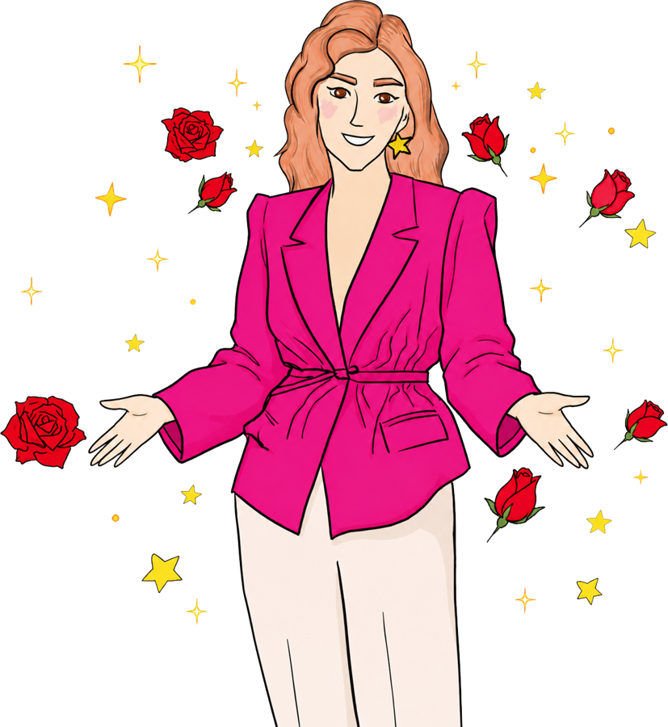
Начнем сегодня с фразы из фильма «Ребекка» (он снят по одноименному роману Дафны Дюморье).
В разгар бала главный герой говорит своей молодой жене, которую он привез после медового месяца в родовое поместье:
— Мне не следовало привозить тебя сюда.
Как вы понимаете эту фразу?
Фраза вырвана из контекста, нам сложно догадаться о ее значении, но, скорее всего, вы предположите, что с поместьем что-то не так. И будете правы.
Главная героиня же, которую преследует образ покойной жены, невероятной красавицы, погибшей совсем недавно, абсолютно уверена, что эта фраза о том, что ей тут не место: ни в замке, ни в отношениях. Эта мысль доводит ее до готовности выпрыгнуть из окна.
Каждый раз, когда мы слышим какую-либо фразу от нашего собеседника, мы вправе выбирать: воспринять ее как негативную, нейтральную или позитивную. Выбираем ей место на шкале позитива и реагируем.
Что дает нам возможность развивать отношения и поддерживать конструктивный разговор?
Практика восприятия нейтральных и позитивных фраз в «плюс», а не в «минус».
Так можно не только избежать разрушения отношений, когда собеседник ничего плохого не имел, а мы напридумывали. Но и занять более выгодную позицию в переговорах.
Если вы воспринимаете реплику собеседника как положительную, то поддерживаете его именно так к вам дальше и относиться.
Зафиксировать позитивное восприятие можно с помощью вопроса-комплимента.
Создать вопрос-комплимент можно по этой формуле:
Комплимент собеседнику, связанный с тем, что он сказал + вопрос, закрепляющий комплимент и двигающий беседу дальше, уже в позитивном ключе.
Примеры:
— Невероятная идея, как вы это придумали?
— Супервопрос, никогда мне такой не задавали, а с чем он связан?
Разберем, как вопрос-комплимент работает на кейсе:
В процессе разговора девушка решила поинтересоваться у парня, кто он по знаку зодиака. Парень ответил:
— Крот.
— Как ты сказал? Крот? С ума сойти! Я в первый раз в жизни встречаю человека, который так отвечает на вопрос о знаке зодиака! Как ты это придумал?
Мы не знаем, зачем парень сказал «Крот». Может быть:
- он хотел пошутить,
- он перепутал Крота с кем-то из знаков,
- он хотел показать, что гороскопы – это чушь.
Мы не знаем правильного ответа. Но если мы удивимся, обрадуемся и сделаем комплимент парню в такой ситуации, то двинем беседу дальше в позитивном ключе с огромной вероятностью.
Здесь важно, что мы не просто говорим комплимент, а заканчиваем его вопросом – так мы и сохраняем позитив в отношениях и лучше понимаем, что движет нашим собеседником.
Ситуация · Кому вы нужны?
Представьте, что вы решили стать автором книги, а ваш коллега говорит:
— Я не понимаю, зачем вы пишете книгу, ведь в наше время книги уже не читают.
Подумайте, что бы вы ответили?
Кейс – реальный.
Урок 11/15
принцип 10
Вопросы о ценностях
Начнем с разбора кейса.
Представьте, что вы решили стать автором книги, а ваш коллега говорит:
— Я не понимаю, зачем вы пишете книгу, ведь в наше время книги уже не читают.
Эта реальная история случилась с Чарльзом Пеллерином, американским учёным, астрофизиком. Чарльз Пеллерин долгое время проработал директором NASA по астрофизике и создал 4D-системы в управлении и создании команд. Книга «Как NASA создает команды» позволила познакомить лидеров команд со всего мира с его системой.
Как ответил Чарльз Пеллерин коллеге, одному из членов 4D-команды?
— Если я приму эту сюжетную линию за чистую монету, то перестану что-либо делать, и как тогда мир узнает о пользе 4D-системы?
Вопросы о ценностях
Это вопрос о ценностях. Чарльз Пеллерин озвучивает свою главную миссию в жизни и призывает собеседника переключиться с критики идей на поиск способов, способствующих реализации миссии.
Можно попытаться доказать собеседнику, что книги читают, привести факты и аргументы. Но изменит ли это его позицию? Не появится ли новая критика?
В такой ситуации нужен вопрос-переключатель, выводящий из позиции противоборства в позицию совместного поиска идей.
Этот вопрос еще и содержит форму-ловушку.
Конструкция формы-ловушки такова:
Предположим, что вы правы, но что тогда делать с____?
С помощью подобных вопросов мы перехватываем управление, выводим собеседника из позиции сопротивления в обсуждение последствий его идей. Так собеседник может самостоятельно поменять свою первоначальную позицию.
Шаблоны вопросов о ценностях, которые мы можем адаптировать под ситуацию, звучат так:
— Что нам по-настоящему важно?
— Чего мы хотим в итоге?
— Как это помогает реализации нашей главной цели/миссии?
В рассматриваемом кейсе вопрос может принять такую форму:
— Как то, что вы говорите, продвигает нас к главной цели — распространению идеи 4D-системы во всем мире?
Ситуация · Хочу ТАКЖЕ!
К разработчику сайтов обращается клиентка за разработкой сайта. Она показывает сайт конкурентов и говорит:
— Мне нравится вот этот сайт, хочу точную копию!
Как ответить с помощью вопроса?
Урок 12/15
принцип 11
Вопросы о смысле
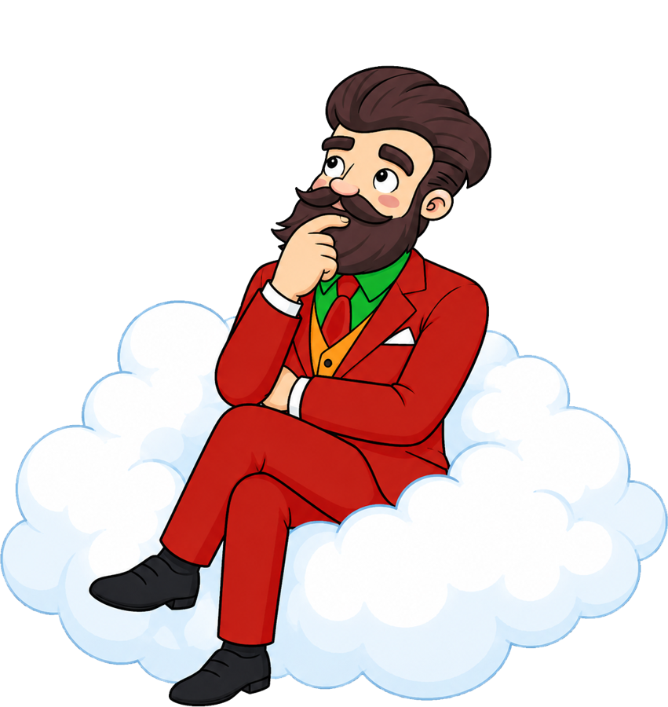
Люди часто не понимают, как то, что они говорят, выглядит со стороны. Совершают глупые ошибки, ведут себя некорректно, а иногда и нарушают законы этики и права.
Если в такой ситуации человеку указать на его ошибки и недопустимость поведения, то, возможно, он и исправится, но вы останетесь в роли «ставящего на место», а как вы понимаете, эта роль не способствует в дальнейшем расположению и продолжению конструктивного диалога.
Если мы видим, что что-то пошло не так, может быть, есть смысл не указывать человеку на ошибки, а развернуть диалог так, чтобы он сам не захотел их совершать?
Разберемся, как это сделать на кейсе.
К разработчику сайтов обращается клиентка за разработкой сайта. Она показывает сайт конкурентов и говорит:
— Мне нравится вот этот сайт, хочу точную копию!
Все мы знаем, что скопировать сайт конкурента – незаконно, даже если и не говорить о некорректности подобного поведения.
А что если клиентка имела в виду что-то другое, просто высказала свое желание в неверной форме?
Попробуем понять ее лучше.
Шаблоны вопросов о смысле, которые мы можем адаптировать под ситуацию, звучат так:
— О чем вы сейчас говорите?
— В чем заключается ваша идея?
— Я не понимаю, в чем смысл?
В рассматриваемом кейсе вопрос может принять такую форму:
— Давайте мы посмотрим на этот сайт и вы расскажете в чем ваша идея, а я, в свою очередь, скажу, что мы можем сделать лучше?
В подобных ситуациях нужно предусмотреть возможность для собеседника не провалиться в роль отрицательного героя, предоставить ему «дорогу к жизни».
Эта ситуация произошла в реальной жизни. Женщине прочитали лекцию о воровстве, и ей пришлось спасать себя самой – она придумала, что это просто был вопрос-провокация. Понятное дело, что после такого эмоционального взрыва она нашла причину отказаться от заказа.
А ведь специалист мог просто найти вместе с заказчицей решение ее задачи, которое устраивало бы обоих. Шанс на поиск решения появляется, если мы вместо обвинений задаем вопрос о смысле.
Ситуация · На линии огня
Мужчина пошел в поликлинику за справкой на оружие. Психиатром оказалась бабуля лет семидесяти.
— Садитесь, – говорит бабуля и что-то в бумагах пишет.
Мужчина ждет и тихонько жует жевательную резинку (чтобы запаха от курения было меньше).
Бабуля-психиатр:
— А вы знаете, что жевать «жвачку» в присутствии женщины неприлично?
Мужчина извиняется, говорит про курение и быстро убирает резинку в сигаретную пачку.
Бабуля берёт бегунок, пишет и комментирует:
— Легко поддается чужому влиянию.
Подумайте, как ответить с помощью вопроса?
Урок 13/15
принцип 12
Вопросы о намерениях
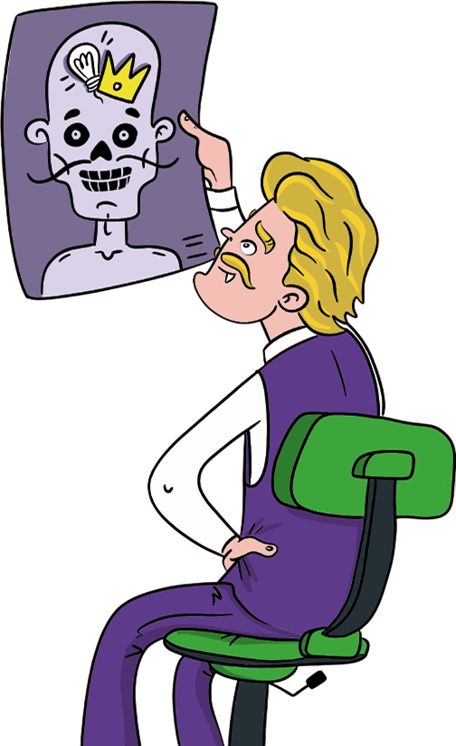
Начнем с золотого правила переговоров.
Прежде чем реагировать, нужно понять ситуацию, в которой мы находимся.
Если у нас есть какое-то предположение о том, что думает/хочет/намеревается сделать собеседник, то нужно сначала выяснить – а верно ли это предположение?
Неверно истолковав ситуацию и прореагировав, исходя из нашего представления, мы можем как оказаться в неловкой ситуации, так и многое потерять.
Как же выяснить намерения собеседника?
Разберемся на кейсе.
- Бабуля-психиатр говорит серьезно или шутит?
- Если серьезно, то ее замечание критично или нет?
- Нужно ли возмущаться или, наоборот, ситуация без риска, а вот если начнем возмущаться, то риск остаться без справки появляется?
Непонятно, поэтому нам и нужны вопросы о намерениях.
Давайте узнаем, как будет разворачиваться ситуация, если просто реагировать на поведение бабули-психиатра и ничего не спросить.
История о страшной разрушительной силе оценочных суждений эксперта
Пошёл я в поликлинику за справкой на оружие. Нужно среди прочего пройти психиатра. Захожу в кабинет, вижу: бабуля лет семидесяти, эдакий божий одуванчик в белом чепце набекрень. Я уж и забыл, когда в последний раз в поликлинике доктора в чепчике видел, но не суть.
— Садитесь, – бубнит бабуля, строча чего-то на бумагах.
Сажусь. Кладу на стол «бегунок». Сижу. Молчим. (Пишет же человек.) Я тихонечко резинку жую (Покурил только что, ну и чтоб запаха меньше…).
Бабуля, не отрываясь от бумаг, спрашивает:
— А Вы знаете, что жевать «жвачку» в присутствии женщины неприлично?
Я извиняюсь, бормочу что-то про курение и желание уменьшить запах, вынимаю резинку и запихиваю в сигаретную пачку.
Бабуля так же, не глядя на меня, не отрываясь от бумаг, берёт мой бегунок, чего-то пишет и комментирует:
— Легко поддается чужому влиянию.
Я, слегка обалдевший:
— Позвольте, но Вы же сами сказали!
Бабуля (естественно, не поднимая головы и продолжая писать):
— Склонен к агрессии.
У меня дыхание в зобу от возмущения спёрло, но внутренний голос гундит: «Молчи, дурак!» А он (голос) не дурак. Сидим. Молчим. 3 минуты. 5 минут.
Бабуля так же, не отрывая взгляда от бумаг:
— Легко впадает в депрессию.
Я начинаю соображать, что мне сейчас не то, что справку не получить, вообще заберут с мигалками, затыкаюсь и решаю молчать, хоть камни с неба.
Сидим. Молчим. 3 минуты. 5 минут. Где-то минут через десять бабуля наконец поднимает голову и хитро-шкодливым взглядом старухи Шапокляк, окинув меня, выдаёт:
— Ладно, иди уж, охотник.
Источник: https://anekdot-ru.turbopages.org/anekdot.ru/s/id/939415/
Шаблоны вопросов о намерениях, которые мы можем адаптировать под ситуацию, звучат так:
— Что вами двигает?
— Какова ваша цель?
— Для чего вы это говорите?
Как вариант, можно озвучить предполагаемое намерение собеседника в вопросительной форме. Можно произнести вопрос с юмором.
В рассматриваемом кейсе вопрос может принять такую форму (произносится с улыбкой):
— Провоцируете?
Ситуация · Ну как не стыдно?
Бизнес-тренер опубликовал пост о своем неудачном посещении курса, где на удивление дальше определений из Википедии и банальных истин автор курса не ушел.
В комментарии пришла подписчица – также бизнес-тренер и написала:
— В последнее время стало модно критиковать коллег, высказываться негативно об их работе, чтобы выделиться. Мне грустно за этим наблюдать.
Как ответить с помощью вопроса?
Урок 14/15
принцип 13
Вопросы-ловушки
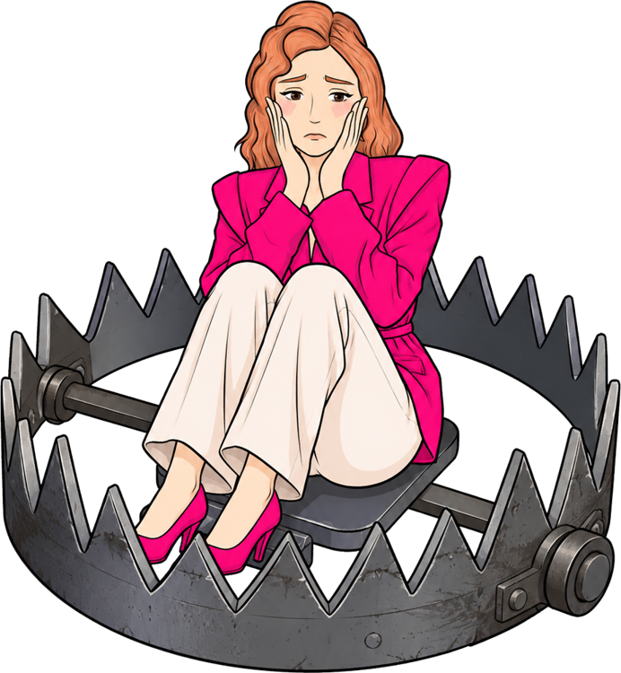
Когда на нас нападают в публичном пространстве (чаще всего это происходит в соцсетях) незнакомые люди, то мы можем выбрать одну из 4 стратегий поведения.
1
Не отвечать.
Пусть человек останется со своим ядом наедине, а остальные на него посмотрят. Неответ – это своеобразный ответ, когда вы демонстрируете отказ вести диалог в подобном ключе.
2
Заблокировать человека, действия которого для вас некорректны.
Такой вариант возможен в крайних случаях, когда человек переступает границы допустимого.
3
Ответить так, чтобы ни этот человек, ни другие читатели не захотели больше на вас нападать.
При этом сделать это максимально уважительно к другому человеку и корректно.
4
Перевести нападающего в число сторонников ваших идей.
Это сложный, трудозатратный (понадобится много вашей энергии и времени) путь, но вполне возможный.
Если провести аналогию со сражением, то:
- 1 сценарий – отказ от битвы (остаться в крепости)
- 2 сценарий – побег от врага
- 3 сценарий – способ стать непобедимым в битве
- 4 сценарий – заключение выгодного союза
Все эти 4 варианта лучше разгрома врага в битве, догадываетесь, почему?
Сегодня мы изучим принцип задавания вопросов, который позволяет стать непобедимым – после него вряд ли кто еще захочет на вас нападать.
Алгоритм вопроса-ловушки таков:
1
Вы задаете нейтральный вопрос, основанный на том, что говорил собеседник.
Это вопрос переключает внимание с вас на собеседника.
2
Собеседник хочет ответить, но тут же понимает, что, чтобы он ни ответил: хоть «да», хоть «нет», – он проиграл.
3
Собеседник начинает выкручиваться и, по сути, отказывается от нападения.
Разберем на кейсе, как это работает:
— В последнее время стало модно критиковать коллег, высказываться негативно об их работе, чтобы выделиться. Мне грустно за этим наблюдать.
— Вы так не делаете?
В вопросе не должно содержаться никаких оценок, иначе он перейдет из разряда нейтрального в негативный. А вы из позитивно настроенного человека мгновенно превратитесь в обиженного обвинителя.
−Так работает «в минус»:
— А вы сейчас, случайно, не выделяетесь?
После использования вопроса-ловушки лучше всего взять паузу и, чтобы ни ответил собеседник, постараться воздержаться от продолжения диалога. Вопрос-ловушка свою миссию выполнил, дальше можно только все испортить.
Шаблоны вопросов-ловушек, которые мы можем адаптировать под ситуацию, звучат так:
— Вы так не делаете?
— А как бы вы охарактеризовали наш диалог?
— А вы как сейчас поступаете?
Ситуация · Друг мой, враг мой
Два школьных товарища создали совместный бизнес. Наконец проект начал приносить прибыль, дела пошли в гору. Вдруг Первый партнёр узнаёт, что Второй партнёр общается и даже ведёт дела с его давнишним недоброжелателем, который в прошлом сильно навредил Первому партнёру. Первый партнёр начинает серьёзный разговор:
— Ты как думаешь, друг моего врага мне – кто?!
Подумайте, как ответить с помощью вопроса?
Ситуация была заявлена на финал VIII Чемпионата России по быстрой управленческой борьбе.
Урок 15/15
принцип 14
Вопросы о рисках
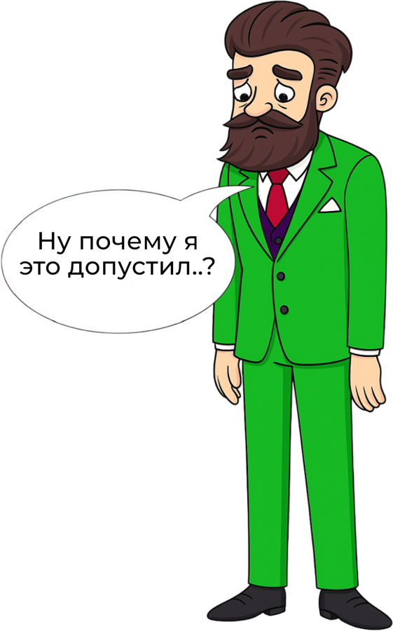
Разбушевавшиеся эмоции часто втягивают нас в разговоры, о которых мы потом жалеем. Перед тем, как вступить в неприятный разговор, стоит себе и оппоненту задать вопрос о рисках, которые разговор несет.
Особенно, если подобный опыт уже был, и мы, примерно, представляем, к чему можем в итоге прийти.
Разберем, как это работает на кейсе.
Друг мой, враг мой
Два школьных товарища создали совместный бизнес. Наконец, проект начал приносить прибыль, дела пошли в гору. Вдруг Первый партнёр узнаёт, что Второй партнёр общается и даже ведёт дела с его давнишним недоброжелателем, который в прошлом сильно навредил Первому партнёру. Первый партнёр начинает серьёзный разговор:
— Ты как думаешь, друг моего врага мне – кто?!
Итак, Первый партнёр втягивает Второго партнёра в разговор, который не сулит ничего хорошего. Мы это легко понимаем по якорному слову, которое он использует – «враг».
Более того, диалог начинается не с прямого обвинения или вопроса, а с втягивания собеседника в какую-то не очень понятную игру «А как называется?», где нужно что-то угадывать и пытаться понять, что хочет от тебя собеседник. Игра эмоциональная, с рассыпанными по полю минами.
Стоит ли говорить, что в такие игры не стоит включаться?
Вопрос о рисках
Просто уйти и отказаться от диалога мы тоже не можем. Первый партнёр занимает важную роль в жизни Второго партнёра, у них совместный бизнес. Скандал, выяснение отношений может существенно навредить работе.
На волне эмоций Первый партнёр об этом забывает. Нам нужен вопрос, возвращающий его из болезненной для него темы к ценностям общего проекта.
Например:
— Ты как думаешь, друг моего врага мне – кто?!
— Скажи, пожалуйста, а ты видишь риски подобного разговора для нашего общего проекта?
Цель вопроса – увести собеседника из эмоций в настоящем в будущее и предложить увидеть, что можно потерять, если сейчас утратить контроль над ситуацией.
Вряд ли подобный вопрос сработает сразу, поэтому держаться цели нужно до тех пор, пока ситуация с возможными последствиями не будет увидена собеседником.
Например:
— Ты как думаешь, друг моего врага мне – кто?!
— Скажи, пожалуйста, а ты видишь риски подобного разговора для нашего общего проекта?
— Да как ты мог так поступить!
— Смотри, у нас сейчас в проекте важный этап: ___. На кону ___. У нас есть способ провести этот разговор так, чтобы не было негативных последствий для бизнеса? Если да, я готов поговорить.
Через призму важности не допустить негативные последствия для бизнеса, тогда разговор об общем знакомом пройдет уже в более конструктивном ключе.
Шаблоны вопросов о рисках, которые мы можем адаптировать под ситуацию, звучат так:
— Чем мы рискуем?
— Что мы можем потерять в итоге?
— Есть ли здесь риск?
15 уроков подошли к концу
Круто, если вы произносили: «О, это интересно!», пока читали техники «Гения вопросов» и будете их применять на практике
До новых встреч,
Ольга Грищенко